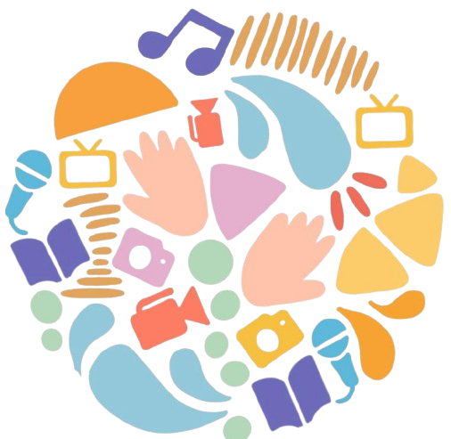

صوت المستقبل
منصة تعليمية متخصصة لتعليم الأطفال مبادئ الصحافة والإعلام بطريقة تفاعلية وممتعة

مرحباً بكم في منصة صوت المستقبل
نؤمن بأن كل طفل لديه صوت يستحق أن يُسمع. منصة "صوت المستقبل" هي مساحة تعليمية آمنة وممتعة مصممة خصيصاً للأطفال لاستكشاف عالم الإعلام والصحافة، وتطوير مهاراتهم الإعلامية، والتعبير عن آرائهم وأفكارهم بثقة وإبداع.
من خلال محتوى تعليمي مبسط وتفاعلي، نهدف إلى بناء جيل جديد من الإعلاميين الصغار الواعين والمسؤولين، القادرين على فهم دور الإعلام في المجتمع واستخدامه بشكل إيجابي.
مساحات التعلم الإلكترونية
يوفّر هذا القسم وصولاً إلى مساحات تعلم إلكترونية متنوعة بالتعاون مع مؤسسات تعليمية وطنية وجهات إعلامية رائدة. من خلالها، يشارك الأطفال في ورش رقمية تنمّي مهاراتهم الإعلامية وتعزز شغفهم بالتعلم الذاتي.
شارك أطفالك في استكشاف عالم الصحافة من خلال أنشطة تعليمية تفاعلية تشجعهم على التعبير عن أفكارهم والتفاعل مع الأخبار.
شارك أطفالك في استكشاف عالم الصحافة من خلال أنشطة تعليمية تفاعلية تشجعهم على التعبير عن أفكارهم والتفاعل مع الأخبار.
كيف أكون إعلامي صغير
تعلم المهارات الأساسية للعمل الإعلامي من خلال دروس عملية وتطبيقات تفاعلية تجعلك إعلامياً صغيراً محترفاً.
الألعاب والمسابقات
استمتع بألعاب تعليمية ممتعة وشارك في مسابقات تحفزك على التعلم والإبداع في مجال الإعلام.
ذاكرة الإعلام
تعرف على قصص وتجارب إعلاميين متميزين استطاعوا ترك بصمة في عالم الإعلام والصحافة.
المشاركات والفعاليات
شارك في الأنشطة التفاعلية والفعاليات التعليمية لتطوير مهاراتك الإعلامية.
من قلمنا
مقالات ومحتوى تعليمي متنوع حول الإعلام والصحافة للأطفال.
كل ما تحتاج معرفته عن الإخراج الصحفي
تعلم أساسيات الإخراج الصحفي من العناوين والصور إلى الألوان والبرامج المساعدة.